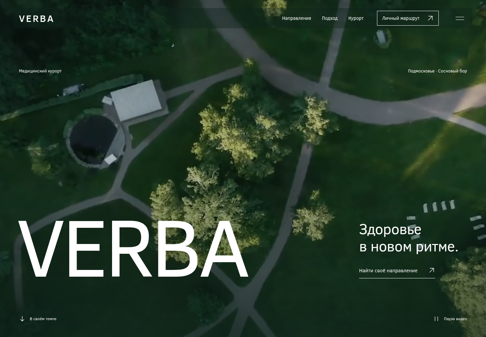
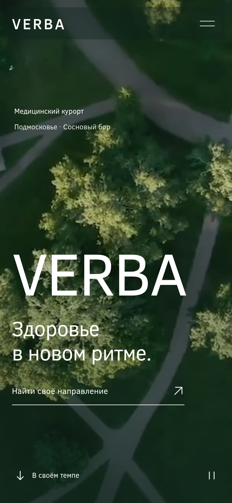
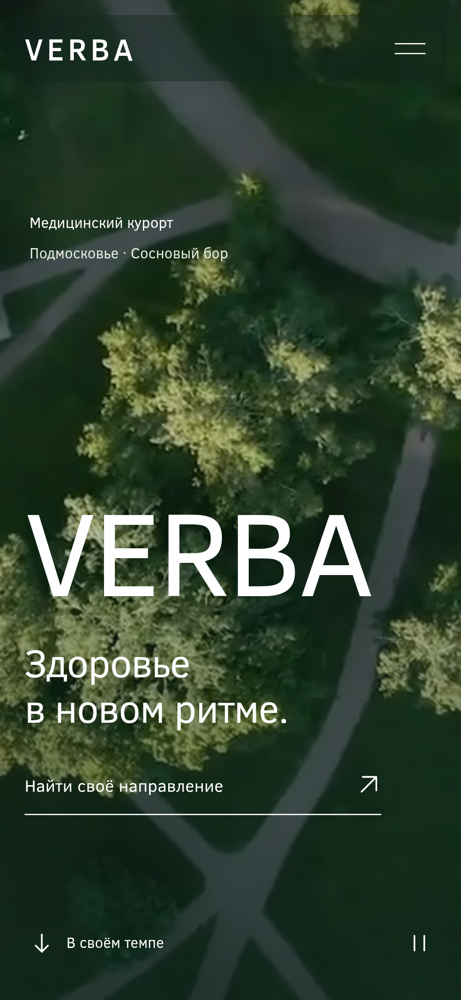

VERBA: реальные экраны и движение
Финальный прототип MILLER / VERBA. Записи сделаны в Chromium на опубликованном сайте GitHub Pages 13 октября 2026. Мобильные проверки используют touch emulation на ширинах 390 и 375 px; это не тест настоящего iPhone или Safari.
Desktop · 1440 px

Mobile · 390 и 375 px




Фотографии и исходный фильм VERBA используются с подтверждённого пользователем разрешения. Финальная лесная сцена предоставлена пользователем как художественная визуализация Runway.